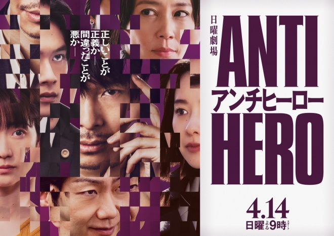
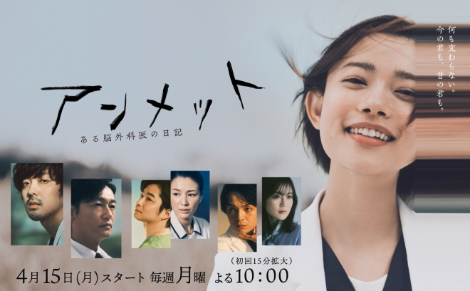
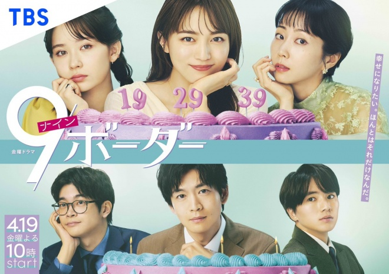

2024春季日劇推薦
反英雄
主角明墨正樹原是一名檢查官，因為一件冤罪案的嫌犯坐牢是自己造成的，決定轉當律師幫他辯護，找出十二年前涉案的法官、檢察官、警察經手的案件，逐一擊破每個人終於拿到新事證，可以重新審判12年前的案子。 這部劇是本季戲劇張力最多的一部劇，開頭的案子讓人印象深刻，主角幫一個犯人從有犯罪證據爭取到完全無罪，後面的每個案子都緊扣著主線劇情，而且節奏明快，上一集才舖的梗下一集就收掉，沒有埋長線到最後一集的情節。 明墨律師前面很得意，事情完全如他的意思發展，對手也不是省油的燈，頻頻出招甚至把他抓了起來，但是另外兩個律師還是找到方法，開始重審案件。 本劇劇情起伏頗大，看得還很過癮，劇情中探討日本檢察官99%判有罪的主題，而且表達很有深度。
Unmet ～某個腦外科醫的日記～(月九)
神經外科醫生川內雅，在次事故中受傷腦部受嚴重的後遺症，不僅失去了過去的兩年的記憶，還會忘記昨天發生的事，她仍在醫院工作時想要放棄醫生的職業，此時遇上性格古怪的神經外科醫生三瓶友治，她的記憶慢慢的清淅起來，想起兩人曾有的過去，以及她為何失憶的的謎團。 這部劇吃飯戲超級多，每一集都有病患但開刀戲不是重點，人與人的互動才是重頭戲，情節屬於療癒系，雖然情節有衝突但都是立場的不同而造成的，尤其是造成川內雅失憶的事件的起因，她的主治醫生大迫教授為了醫院改建，一直不讓她想起那件事。
BLUE MOMENT/暮色氣象英雄(水十)

主角晴原柑九郎任職於SDM總部（特別災害管理總部），他利用豐富的氣象知識預測氣象災害，例如暴雪、雷擊、豪雨與土石流、以及颱風等等，與其他成員冒著生命危險在前線奮戰，以保護遭受嚴重天氣災害威脅的人們的故事。但是在他執著於救人的身影背後，卻隱藏著一個關於五年前的悲劇。 以單元劇來說這部劇算好看了，第一集中救難人員於暴雪中救回山難者時，救難人員掙扎於救人會讓自己陷入困境的部份十分猶豫，但最終還是選擇將人救回讓人深有感觸，這段劇情會讓人想起現實裡救難人員常常失去生命而救回受困者的悲劇。
Believe(木九)
由木村拓哉出演隸屬於大型總承包商的建築師狩山陸，熱衷於建造橋樑，但是大橋在建造過程中傾毀，他被判一年刑期坐牢後，得知老婆罹癌不久於人世，他為了澄清自己是無辜的，不惜越獄想要找出真相，他從警察黑木正興口中得知黑木的弟弟，若進建材收了公司內部董事的錢破壞大橋，而幕後人物正是社長本人與東京都知事。 這部劇前三集還能看，至少看主角被關進牢裡還試圖脫逃，到脫逃成功這一段戲有戲劇衝突，主角也有一個目標。中段劇情太拖戲了，他為了拿回當初留下的證據與屬下、律師，建築公司的社長來來回回交談想取得證據，這樣的劇情拖到第9集，劇情一直在空轉，事情完全沒進展，就只看到東京都知事的圖謀，建築公司內的鬥爭，一堆人整天在談話，也談不出一個所以然，讓人覺得不耐煩只想不停的快轉。 雖然是9集的劇情，但是第4-8集的劇情有很多不必要的情節，直接濃縮成2-3集也沒問題，戲劇張力超級弱，弱到一個不行，這一部是春季日劇期待值高，失望值最高的一部劇。
9 Border(金十)
描寫19歲的八海、29 歲的七苗、39 歲的六月，三姐妹在面臨「9 界線」時，因為父親突然失蹤而同住一個屋簷下，三個人探索生活、工作和情感間的日常。三姐妹正面臨不同的問題與人生考驗，在挫折中逐步找回自己的路上更加溫柔和堅定，並生出面對未來的勇氣和希望。 乍看之下這部劇好像在寫愛情，但更多時候是在描寫三姐妹的親情與她們的人生，看了第一集就覺得這部劇真是好看，劇情裡有很多金句，卻不會讓人覺得有說教感。例如劇中描寫七苗在職場上遇到的問題，面對不太上心的部屬，還得幫有小孩的同事的忙負擔更多的工作，她為了賺錢每天都忙於工作，忙到沒時間去喜歡的餐廳吃飯，沒有時間思考自己真正喜歡的是什麼。但她遇到洸太郎後，溫柔的洸太郎總是給她支持，還說：「不知道該怎麼做的時候，就好好地過好今天吧。」
殺人十角館
K大學推理小說研究會的六個學生前往被稱為「角島」的無人孤島。角島在半年前，當地曾發生殺人事件，島上的主人中村青司殺了妻子與園丁後自殺的四重殺人事件。六個學生與中村青司的親戚一共七個人居住在島上唯一殘留的「十角館」。他們在島上度過了七天的時間。 另一方面推理小說研究會的江南孝明(代稱柯南.道爾)收到奇怪信件，信中控訴中村千織的死另有犯人，他覺得奇怪決定前往拜訪中村千織唯一的血親中村紅次郎，在那裡他遇到了島田潔，島田也覺得有意思，與他一起查明真相。 第一集就知道六個學生都有代稱，分別是愛勒里昆恩、阿嘉莎、愛倫坡、勒魯、奧希茲、卡爾，有看推理小說的人都知道這幾個作者，感覺是作者在致敬前輩，畢竟這是綾辻行人的第一本小說。七個人一起在島上的生活，會讓人想到阿嘉莎的名作《一個都不留》，但故事又不太一樣。第一集最後有人死了以後，故事的懸疑感很重，會好奇是誰下的手，剩下的六個人開始互相懷疑對方就是兇手，那種處於迷霧裡的焦慮與不安感的氛圍，作者處理的不錯，會讓人沉浸在那種氛圍，還有隨著死亡的人物愈來愈多，也會好奇到底誰是兇手，。 到了第三集中只剩艾勒里與愛倫波以及另外一人時，艾勒里還覺得那個兇手是可能還活著的中村青司，就是個外來者，但是愛倫波死了以後艾勒里在屋裡發現機關，與另一個人跑到地下室時依舊覺得兇手是中村青司時，很想問問：愛倫波你不覺得不正常嗎？畢竟七張卡牌裡有五個被害人，偵探與兇手。 兇手是誰不就呼之欲出了嗎？ 另一方面真正的偵探，江南孝明向警察說明他的代稱是柯南.道爾，而另一個人向警察說明自己的代稱是……。不對呀，他……他……他不就是那剩下的兩個人裡面的另一個人，警察說愛倫波是放火自殺身亡，但也說有他殺的嫌疑。 第五集裡警察沒有找到他殺的証據，但江南孝明推測出兇手是艾勒里，並向那個人解釋艾勒里是千織的男朋友，但那個人心理很後悔，回想起中村千織喝酒致死的那一天兩人的對託，他發現要復仇的對向其實是他自己，真是悲慘的結局，完全無法認同他的復仇動機。 對結局很失望，奧希茲死掉的時候以為手法是密室殺人，結果完全不是這個一回事，第五集有一大段是兇手的自白，他有房間的鑰匙，他能自由出入每個房間，太扯了，不止是如此，兇手白天在島上沒錯，但晚上是在另一個地方，每晚靠著塑膠遊艇來回兩地，而且兇手完全把江南孝明當工具人，當作自己的不在場證明的證明人。 最後的答案不是由江南孝明與島田潔來解謎已經很讓人失望了，而且江南孝明到最後還是不想懷疑他，反而是島田潔點出另一個可能性，中村千織的男朋友其實是他。